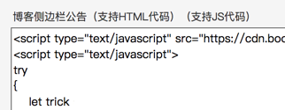
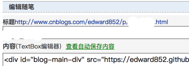

1 简介
本文主要介绍如何通过iframe在 博客园 转载博文。
需要注意的是，该方法如果广泛使用可能会被博客园封堵，请低调地使用。
2 背景
由于博客园目前只能通过手动复制粘贴的方式转载博文，因此我们希望有一个更方便的方法。
一个比较自然的想法就是通过iframe嵌入到自己的博文。
处于草稿状态的博文确实可以这么做，但是当你发布的时候就会发现iframe不见了。
由此可以猜测博客园后台应该是会自动删除博文中的的iframe元素。
3 原理
我们怎么绕过博客园删除iframe元素的机制？
通过js插入iframe元素是否可以？
通过测试，正常情况下并不能通过js插入iframe元素，因为含有iframe的代码被删掉了。
接下来通过测试可以发现，含有'<iframe'和'iframe>'的部分会被删除。
拼接出来的iframe元素是否可以插入？ 幸运的是，回答是肯定的。
于是我们找到了解决方法，通过js以拼接出iframe元素的方式插入iframe。
4 步骤
4.1 申请开通js权限
默认情况下博文页面并不能执行js，需要在 设置 里面申请开通js权限。
4.2 拼接出iframe元素并插入
可以 '<' + 'iframe' ，也可以 '<i' + 'frame' ，甚至可以通过编码、解码得到完整的'<iframe'。
至于iframe的src属性可以在博文中某个元素里面设定，比如说<div id="…" src="…"> ，然后通过js提取。
代码比较简单，这里就不提供源代码了。
 